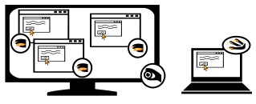

How to

You should have 2 differents computers. On the one with the bigger screen, launch ShivaQEviewer.exe
Click "Add". Fill the fields.
Give Ip or hostname of the slave VM, you can add a Hostname but it's optionnal.
Give windows credentials. If you dont specify a domain in the login textbox, default is "localhost".
To specify a domain, prefix the login with you domain and separate it with a backslash. ie: domain\login
Click "Add". The slave should appear in the list. If you want to have more slaves, add it as we just did.
When you are done, click on "View". A resolution is asked, put the one of your computer with the smaller screen (which will be your master computer).
Click "OK". All computers open with RDP.
Start ShivaQEmaster.exe on the computer you want to control.
Its easier if this computer is a VM you're connected on with remote desktop (rdp) from your physical computer that has the smallest screen.
Specify IP or localhost in ip textbox. Friendly name is optional. Click "Add".
Slave should appear in the list and should automatically be connected to master.
On the slave's systray (near the clock in the windows task bar), a small icon with a mouse should be orange if connected, grey otherwise.
You can remove a slave with the button "Remove". Button "Reconnect" tries to reconnect all slaves.
If "Live broadcast" switch is On, keyboard and mouse input are transmitted, if "Live broadcast" is Off, no activity is replicated to slaves.
"mouse movement" checkbox disable mouse movement transmission if checked.
Mouse movement are not necessary because position of the mouse is transmitted on click. Mouse movement is just here for the beauty.
ShivaQEmaster comes with few shortcuts.
Double press key:
- F5 to start transmission
- F6 to stop transmission
- F7 force resize of slave's active window to take the size of the active window on Master
- F8 to hide or show ShivaQEMaster.exe's window
Under the Hood
ShivaQEviewer is a deployer to inject to slaves computer the program that allow them to be controlled (shivaQEslave).
ShivaQEviewer uses psexec to automatically start shivaQEslave
ShivaQEmaster send data through TCP execpt for mouse movement that are transmitted with udp.
ShivaQE uses libraries listed in "Projects that made ShivaQE possible"
Other uses
There's potentially many other uses than manual testing.
One of them is the streaming of a computer' screen through RDP for a demo.
With RDP you can't stay logged to a same computer from 2 different computers.
With ShivaQE you could open a replica (a slave) on the computer used to show the presentation and altogether make the demo from your "master"
For the audience of your demo it will be as if you were streaming your screen.
Another idea is to administrate a park of computers graphically.
Known Issues
International Keyboard Layouts are treated as normal ones.
It means if you use a keyboard layout like US-International, it will not allow you to create characters like “ é ” with the combination key “ ‘e ”.
If you find an issue, please open a ticket on the github page. Thanks
Who uses it
Some folks uses ShivaQE at SAP.
I made this software on my spare time (holidays, weekends, evenings) to use it at work for repetitive tasks.
I work on an old software that is in maintenance and rarely changes its UI.
Some tests must be run manually and on different versions of the software (sometimes it can go up to 8 or +)
ShivaQE makes me gain time to focus on other less repetitive and time expansive tasks.
Projects that made ShivaQE possible
- GlobalCbtHook
- MahApps.Metro
- MouseKeyboardActivityMonitor
- Newtonsoft.Json
- psexec
- SimpleImpersonation
- WindowsInput
License
GNU General Public License (GPLv3)